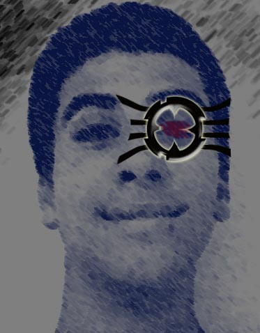

Voila le temps des présentation !

Et bien voila ! Cette "chose" au dessus, c'est moi !
Nom : iLsA
Age : 15
ville : Pau
Languages connus :
- Français (hu...hu...hu)
- VB6
- HTML
- PHP
- MySQL
- DOS
- C++
- VBS
- Action Script
Configuration du pc :
- Athlon 64 3000
- 512 RAM
- 2 DD 80 Go
- Carte graphique ATI Radeon 256 Mo
... etc.
Caracteristiques : Joue de l'alto (entame ca 6eme année : ] ),
ecoute tout les styles de musiques mais aime particulièrement george benson,
stevy wonder (la bonne vieille musique !!!). Fesait du BMX (mais a dut arreter
(satané syndrome rotulien...)).
SpyneNetwa
Il m'a ajouté a ces contact, et m'a dit qu'il etait
interessé par la team. Il m'a alors sortis 4 magnifiques
tutos
de sa conception, ce qui m'a fait opter pour le oui !
Alastore
Modérateur du forum elbossoso, et membre particulièrement doué en securité
informatique.Dès qu'il a postulé, je l'ai tout de suite pris de peur qu'une
autre team lui propose une ofre plus alléchante :-D !!!!
Kafez
Notre graphiste, et en plus de ça, mon cousin !
Fan de Marlboro, graphiste, souffrant d' un complexe de superiorité,
Nintendologue
et adorateur de zelda, ElodiZophage, cafeinomane et pour finir en beauté:
pizzaiolo.